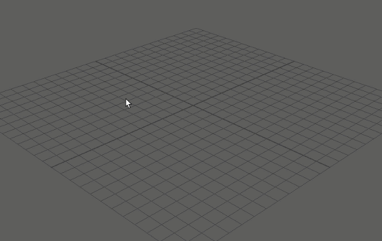

使用“搜索”(Search)字段，可以在 Maya 中快速找到要查找的内容。这将根据您的搜索条件列出相关项，然后您可以从列表中直接进行选择或运行。搜索结果可能包括：
- 菜单
- 工具
- 场景对象
- MEL/Python 命令

搜索菜单/工具/命令
- 单击“工具箱”(Toolbox)下的“搜索”(Search)图标 ()，或者按 Ctrl + F 以打开“搜索”(Search)字段。
- （可选）单击搜索字段左侧的模式按钮以切换到适当的模式。
- “搜索”(Search)模式 () 用于查找菜单或工具。
- “选择”(Select)模式 () 用于查找场景中的对象。
- “Python”模式 () 用于查找 Python 命令。
- “MEL”模式 () 用于查找 MEL 命令。
- 在搜索字段中输入文本。
- 文本可以与命令/菜单/工具的直接名称相关，甚至可以与其关联的关键字相关（例如，“hair”显示 XGen 结果，或者“Water”显示 Bifrost 或 BOSS）。
- 在 MEL 或 Python 模式下，可以从“搜索”(Search)字段运行特定的命令或命令序列（例如，搜索“polyCube -w 20; polyBevel;”会创建一个宽度为 20 的多边形立方体，并进行倒角处理）。
- 在“搜索”(Search)模式下，可以通过使用 = 开始搜索（或在搜索栏的现有条目中按 Tab 键）来进入正则表达式模式。
- 在“选择”(Search)模式下，还可以使用 / 开始搜索以搜索特定的节点类型（例如，搜索“/camera/”将返回场景中所有摄影机的列表，而搜索“/camera/persp”将专门返回透视摄影机）。您也可以将它与正则表达式模式结合使用。
当您在字段中输入文本时，Maya 将自动显示完全匹配以及同义词的匹配结果。对于多字词条目，“搜索”(Search)将分别匹配每个单词的结果（例如，键入“co br”会返回所有结果，如“Content Browser”和“Comb Brush”）。
- 选择命令以执行它，或在结果中亮显命令时按 Enter 键。
- 通过单击相应搜索结果中的选项框，可以访问菜单/工具设置。
- 通过单击搜索结果右侧的 i 图标来查找有关搜索结果的额外帮助。
- 通过按住 Ctrl 键并单击命令，或亮显命令然后按 Ctrl + Enter 键，可以执行此命令，而无需关闭“搜索”(Search)字段。如果要多次执行命令，这将非常有用。
注： 默认情况下，“搜索”(Search)会在启动时自动显示最近搜索过的六个命令，即使搜索字段中没有任何内容也是如此。
也可以使用 Ctrl + F 来循环切换这些模式。
注： 如果将“搜索”(Search)重映射到新的热键，则可以改用自定义热键进行循环，但前提是所选的热键支持修饰键（如 Ctrl/Alt）。
按标记过滤结果
您可以使用标记过滤搜索之后显示的结果。

过滤结果
- 按 Ctrl + F 以打开“搜索”(Search)字段。
- 单击搜索字段右侧的标记按钮 (
 )（或者按 :）。
)（或者按 :）。
- 单击要包含的标记。
您可以通过在搜索栏中单击标记，来从搜索中移除相应的标记。